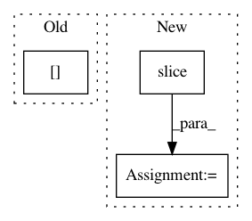

0e97aaafdc7f797127f80a3510c4dac861174cc0,gluoncv/model_zoo/monodepthv2/pose_decoder.py,PoseDecoder,hybrid_forward,#PoseDecoder#Any#Any#,62
Before Change
out = 0.01 * out.reshape(-1, self.num_frames_to_predict_for, 1, 6)
axisangle = out[..., :3]
translation = out[..., 3:]
return axisangle, translation
After Change
out = 0.01 * out.reshape(shape=(-1, self.num_frames_to_predict_for, 1, 6))
axisangle = F.slice(out, begin=(0, 0, 0, 0), end=(None, 2, 1, 3))
translation = F.slice(out, begin=(0, 0, 0, 3), end=(None, 2, 1, 6))
return axisangle, translation
def predict(self, input_features):
In pattern: SUPERPATTERN
Frequency: 3
Non-data size: 3
Instances
Project Name: dmlc/gluon-cv
Commit Name: 0e97aaafdc7f797127f80a3510c4dac861174cc0
Time: 2020-10-14
Author: haofeikuang@gmail.com
File Name: gluoncv/model_zoo/monodepthv2/pose_decoder.py
Class Name: PoseDecoder
Method Name: hybrid_forward
Project Name: keras-team/keras
Commit Name: 0b04ac3117e44e9fcc0222b479a34048171462a7
Time: 2016-09-19
Author: francois.chollet@gmail.com
File Name: keras/backend/tensorflow_backend.py
Class Name:
Method Name: rnn
Project Name: dmlc/gluon-nlp
Commit Name: a9eb2fd38180b5affbd30ec78f33f6ef16ef9c20
Time: 2019-08-19
Author: linhaibin.eric@gmail.com
File Name: src/gluonnlp/model/bert.py
Class Name: BERTModel
Method Name: _apply_pooling